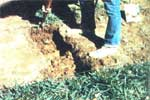

Biodynamic Gardening
Alan Chadwich demonstrated the techniques of biodynamic/French intensive gardening on a barren four-acre clay hillside at the University of California's Santa Cruz campus. This method is also used by John Jeavons. The theories of biodynamic gardening were originally developed by Rudolf Steiner.
By the Mother Earth News editors
January/February 1980
Whether the problem is feeding a hungry world or simply increasing the productivity of a small backyard garden, the solution might well be biodynamic gardening.
Back in 1966 Alan Chadwick - an English actor, painter, pianist, and master horticulturist - was offered a chance to demonstrate the techniques of biodynami (French intensive) gardening on a barren four-acre clay hillside at the University of California's Santa Cruz campus. Chadwick tackled the little "desert" (land that was so inhospitable that few weeds even grew there) with hand tools, a love for the garden that he knew the plot could become, and incredible energy. Before long the once dead-looking slope was a veritable paradise of vegetables and flowers, and a beacon that attracted students and followers.
Since then, biodynamic gardening (often referred to as permaculture or "the method") has slowly gained a reputation among organic gardeners in North America, largely through the efforts of Chadwick and John Jeavons (of Ecology Action of the Mid-Peninsula in Stanford, California). It was Jeavons who eventually took the technique - which Chadwick had synthesized from the intensive gardening practiced in turn-of-the-century France and the biodynamic theories developed by Rudolf Steiner in early 20th century Austria - and subjected it to careful modification and testing. He was always striving to produce the optimum yield from the smallest possible space.
And John's harvests have been little short of amazing! His per-acre "method" crop production has, for example, climbed to between four and six times that of the average U.S. yield (while, in rare cases, the biodynamic gardens have produced as much as 31 times the national crop average for a given amount of space!). In fact, Jeavons has gone so far as to estimate that it would be possible for an urban, suburban, or rural gardener to net as much as $10,000 a year from the produce that he or she could grow on a scant 1/10 acre!
Furthermore, as if such incredible results weren't enough to recommend this revolutionary gardening technique, the biodynamic system uses no polluting, fuel, no toxic pesticides and no highly processed chemical fertilizers. In fact, the technique actually improves the quality of the soil with each crop that's grown! And it does so while using only 1/100 as much energy and 1/8 as much water as does commercial agriculture.
HOW IS BIODYNAMIC GARDENING DONE?
All the different facets of the permaculture method serve to allow the gardener to produce as many healthy plants as possible on a given piece of land. The raised beds that are characteristic of such gardens, for instance, serve several purposes.
First, since the growing areas are wider than are "normal" garden rows (approximately five feet ... in order to allow the gardener to each plants in the middle without stepping on, and compacting, the soil in the bed), less space must be wasted on walkways. The rectangular beds are raised from four to 10-inches above the original ground level, too, and their edges are angled down at a 45* slope ... effectively providing more (curved) surface area than if the same piece of ground were left flat.
Most important of all, though, the beds are "double dug" to a depth of two feet (see the accompanying photos for step-by-step digging instructions). Because of the resulting deep "cushion" of well-worked soil, plants can more easily send their tiny root hairs down to gather in the water and nutrition (supplied by compost, ashes, bone meal, and other such organic plant foods) that are necessary to healthy, insect-resistant, nutritious, delicious vegetables.
The arrangement of the plants on the bed is a bit unusual, too ... at least to anyone accustomed to more common gardening techniques. The seeds (or flat-started plants) are placed in such a way that the foliage of each mature vegetable will just barely touch that of all its neighbors ... creating a leafy cover (known as "living mulch") which keeps weeds down, helps to moderate the swings of soil temperature, and improves the bed's ability to retain water. And, of course, such "close quarters" planting is another reason for the gardening technique's incredible yields.
It's difficult to give a rule of thumb for plant placement in a biodynamic/ French intensive bed. Actually, the spacings recommended on seed packets will often work out fine, since the heartier "method" -grown adult plants tend to spread farther than do their conventionally raised cousins. It's best to simply estimate the diameter of the adult vegetable's "leaf ball" and use that figure to mark the distance between your plants.
Of course, a technique that can enable an average homeowner to raise a cash crop in a small back yard involves more than merely digging deep beds and planting vegetables close together. Further preparation of the soil includes [1] the use of a specially prepared (for at least three months) compost consisting of -by weight-1/3 dry vegetation, 1/3 wet vegetation or kitchen scraps (you can include bones but not meat), and 1/3 earth ... [2] an organic fertilization program that's specifically designed to meet the needs of each crop ... and [3] daily light waterings with special hose nozzles and cans that simulate the gentle fall of rain. (For more information on the specifics of these and other aspects of biodynamic/French intensive gardening, consult one of the volumes listed in the accompanying sidebar.)
COMPANION PLANTING IN TIME AND SPACE
The way in which the growing space is used is at least as important to success. ful "method" gardening as is the preparation of the soil. Vegetable types are grouped together-in single beds or, if the garden is a large one, in groups of adjoining beds- according to compatibility.
Intensive gardeners believe that different plants - especially when grown in close proximity-affect each other in a number of ways. The vegetables must, for example, be placed with a regard for simple physical compatibility ... that is, a slow-growing variety shouldn't be planted where it will soon be overshadowed by a rapidly maturing plant.
But companion planting goes far beyond such commonsense dictums. Certain vegetables, flowers, and herbs-as many of you already know-are actually mutually beneficial when grown together ... helping eliminate each other's insect pests, and ever, influencing the quality of each other's products! (Potatoes, as an example, can-when planted near beans-be very helpful in controlling the .Mexican bean beetle ... while bibb lettuce will taste better if it's grown in companionship with spinach!) Most of the volumes listed in the sidebar contain detailed companion planting advice ... as does the article, Companion Planting.
In order to make the most efficient use of both garden space and growing season, "method" gardeners also practice succession planting ... which is a kind of companion planting in time, or a smallscale, intensive form of crop rotation. This practice, of course, allows the grower's plot to yield the greatest possible amount of produce.
More important, however, is the fact that succession planting-as practiced by biodynamic/French intensive gardeners-alternates plants that are "heavy feeders" (those that take large amounts of nutrient from the soil) with varieties that are "heavy givers" . . . and thus the productive technique also helps the gardener return more nutrition to the soil than he or she has taken out!
NOW IS THE TIME TO BEGIN BIODYNAMIC GARDENING
Right now-while the snow is level with the windowsill and the chilled trees squeal in the slightest breeze-is the best time to begin planning a spring "method" garden. Your first plot needn't be a big project, either. In his book on the subject, John Jeavons presents a complete plan for a sample 100-square-foot bed-a plot only 5 feet wide by 20 feet long-which, he claims, will be enough space for an accomplished gardener to produce a full year's supply of vegetables for one person.
And, come springtime, you car simply smile knowingly when your gardening friends question your sanity for working the earth two feet deep with hand tools. Because-once the crops start coming, and coming, and coming in ... you can explain that there's a "method" to your madness!
EVERYTHING YOU NEED TO KNOW ABOUT BIODYNAMIC GARDENING
You'd be hard pressed to find any better sources of information about intensive gardening than the following books.
1. How to Grow More Vegetables by John Jeavons (Ten Speed Press, Berkeley, California, 1979), $5.95. This is the book on the practical application of the biodynamic/French intensive method.
2. Success With Small Food Gardens Using Special Intensive Methods by Louise Riotte (Garden Way, Charlotte, Vermont, 1977), $5.95. A very good source of information. Ms. Riotte also stresses the idea of landscaping your yard with shaped intensive beds.
3. The Postage Stamp Garden Book by Duane Newcomb (J.P. Tarcher, Inc., Los Angeles, California, 1975), $4.95. Mr. Newcomb presents a number of techniques borrowed from biodynamic/French intensive gardening and other organic growing methods. The book includes a detailed, alphabetical, plant-by-plant information guide.
4. Intensive Culture of Vegetables by P. Aquatias (Solar Survival Press, Harrisville, New Hampshire), $5.95. This reprint of a classic 1913 volume on the original French intensive system has been reissued by Leandre and Gretchen Poisson-of Solar Survival, Inc.-who are this country's foremost proponents of the traditional French method.
See the Image Gallery for images of double digging.
|
STAFF PHOTOS Biodynamic gardens make it possible to grow lots of food in very little space. |
Double Digging: Mark the plot's borders with string, and dig a footdeep trench across one end of the bed (place the soil that's removed in a wheelbarrow). |
Loosen the earth another foot deep with a garden fork. |
|
 The soil beneath the borders of the bed is forked loose, too, to match the slant of the finished raised plot. |
A second trench is dug alongside the first, and its soil is piled into the previously dug ditch. |
The subsoil is loosened, and the same procedure is continued to the end of the bed. |
|
Then the soil removed from the first trench is dumped into the final ditch. |
 The bed is covered with compost and organic fertilizer. |
Then the double-dug bed is shaped and smoothed. |